简介
《凤凰项目—一个IT运维的传奇故事》由Gene Lee等三位运维领域的大牛编写而成，讲述无极限汽车零件公司如何在痛苦中通过团队的努力，共同实践三步工作法实现浴火重生的故事。三位作者现在都是公司管理层，所以书中既有运维工程师微观视角，也有管理者的宏观视角。Ruddy Lee老师说他跟工程师打赌，工程师一般都翻不到几页也就不读了，原因是大家都有阅读焦虑症，日记小说般的结构无法快速的找到技术重点。我也觉得工程师很难读完第一部分，原因是工程师大多会恨得牙痒痒，把书撕了！里边有太多我们曾经经历过的场景，那些让我们痛不欲生的经历。
整本小说的主人公叫做比尔，担任运维总监的角色，比尔通过自己的努力，让运维部、开发部、测试部、业务部门联合起来，为公司实现了业务的成功。所以小说的视角主要是在运维领域。在任命比尔担任IT运维负责人（运维总监）之后，CEO提出的期望：IT系统运行可靠高效，为业务部门提供保障，尽量减少运维中的故障，让业务部门集中精力完成凤凰项目运维分工分布式技术运营。
第一部分：人间炼狱
我将第一部分命名为：人间炼狱。这个阶段里，运维故障天天有，争吵、指责、敌对充斥着每天的工作。根据时间线，我整理了如下的问题：
1. 公司整体问题
- 前任CEO重掌董事会，公司管理层动荡，目标不一致
- 股东打算拆分公司
- 业务总监阴谋私下联合董事会反对运维改进
- 既要保持竞争力，又要削减成本
- 公司经过多轮裁员，人心不稳
- 公司市场占有率下降
- 公司股价下跌严重
- 业务总监利用凤凰上线预期效果绑架CEO的决策
2. 运维管理问题
- 业务总监反对
- 高管变动太快
- CIO和运维总监离职
- CIO=Career Is Over
- IT预算和人员申请总是被驳回
- 培养人太难
- 运维关键资源一直是瓶颈
- CEO支持力度小
- 不正视资源与任务的失衡，不正视凤凰项目面临的巨大风险
- 不给资源，只派活
- CEO被业务总监灌了迷魂汤
3. 运维问题
1. 计划外故障
- 工资核算系统故障
主人公临危受命，第一个要解决的问题就是工资核算系统的故障，这次经历让比尔认识到运维团队现在乱的像一锅粥。重点内容如下图所示：重点问题：没有实质上的变更管理，运维工作处于失控状态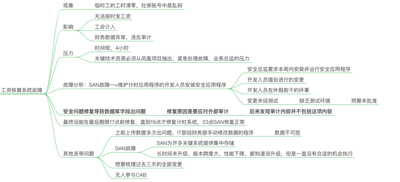
- SOX-404审计合规问题
紧接着，比尔就遇到了第二个问题，疲于奔命，到处救火，这就是很多运维团队的真实写照。这件事之后，主人公尝试向CEO申请更多的资源，希望将重点放在凤凰项目上，得到的答案是没有资源，所有任务都要完成。重点问题：运维团队超负荷工作，没有资源，尤其是关键资源一直处于饱和状态。作为运维总监，比尔对团队的工作内容与状态一无所知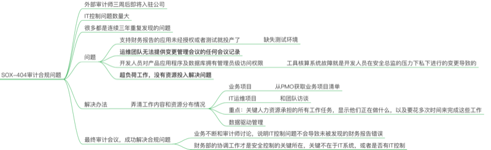
- 1级严重级别事故：信用卡处理系统故障
重点问题：此次事故充分暴露了运维团队缺乏事故处理机制与预案，团队缺乏信任，推卸责任严重。过度依赖关键资源
- 其他故障
重点问题：IT****设备采购周期太长这个问题在大部分公司里都存在，随着云计算（公有云和私有云）的成熟与普及，能降低IT设备采购对生产系统的影响
- 发票系统故障
这是直接导致主人公和CEO闹翻，最终辞职的一次事故，发生在凤凰上线部署之后。这次事故也让无极限遭受极大损失。重点问题：CEO****无视运维的基本规律，擅自干涉运维工程师的工作，逼迫工程师瞎忙碌曾经听说因为某次事故，CEO将整个运维团队开除的情况（未经核实）。运维一直被视为成本中心，在企业组织中的价值不容易体现，老王根据精益提出的两点：拒绝浪费、创造价值，很好诠释了运维团队需要坚持的原则。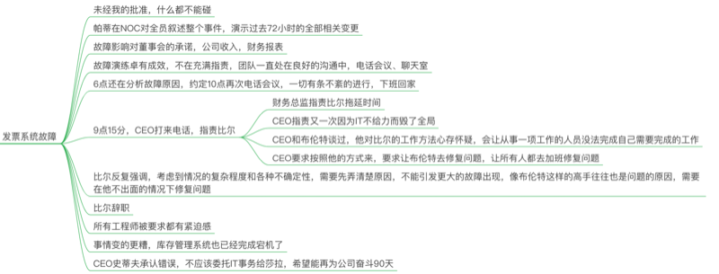
2. 凤凰项目
凤凰项目是这个公司的希望，更是一场灾难，在小说第二部分甚至得出结论，凤凰项目就不该被批准。重点问题：这是我见过的最有代表性的项目，艺术源于生活而高于生活，凤凰项目基本集齐了所有我们遇见的项目问题，延期，质量低下，着急上线，环境不一致，未经测试，互相指责，工期不考虑测试与部署。差点就召唤出神龙了，具体请看图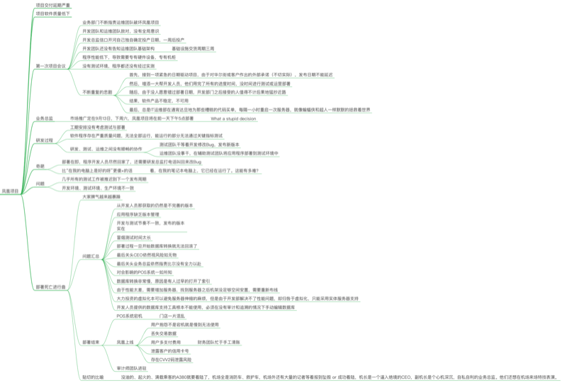
3.运维流程
- 过于复杂陈旧
- 无人遵守流程:
- 申请生产环境变更到实施的周期太长
4. 黑锅王
往来邮件必称“由于IT故障”
5. 关键资源瓶颈
- 关键资源总是受到外界打扰
- 不会记录故障处理方式（缺乏文档化，知识共享）
4. 团队管理与协作问题
1. 运维团队
重点问题：
- 运维团队不参与研发团队的架构和计划会议：DevOps在组织文化层面强调团队共同Share Responsibility，需要运维与研发相互之间进行反馈，运维团队参与架构和计划会议是明智的举动，这样才能设计出易于运维、高可用、安全的架构
- 关键资源管理：项目管理中有关键路径法用于制定计划，最长的路径决定了项目的整体进度。关键资源总是处在关键路径上，而且是多条路径上。小说中提到了"等待时间=忙碌百分比/空闲百分比"，工作中心资源90%的时间是忙碌的，可以理解为，每个任务进行工作中心时，前边总有需要90%时间的任务，1天10小时，需要等待9小时才能处理。关于关键资源瓶颈的解决办法，重点在保护关键资源，图中可以看到一些解决办法和寻找问题的方法（观察+沟通）
- 项目泛滥，资源严重不足：比尔上任初始，最大的行动就是对现有项目的梳理，流程的重组优化。
- 变更管理流程失效：看板是解决变更管理和可视化工作的重点方法，对变更进行分类和管控，严控半成品
- 运维对开发的认识是：没有不给生产环境添乱的开发人员
这个和运维与开发的基本目标有关，为什么Dev和Ops存在壁垒和矛盾，Dev求变，希望更多的变更，交付等多的代码，而Ops求稳，希望生产环境尽量不发生变化，这样服务可用性采用保障。考核的目标不同，自然会有冲突。Google SRE提出的“错误预算”在此间找到了一个平衡。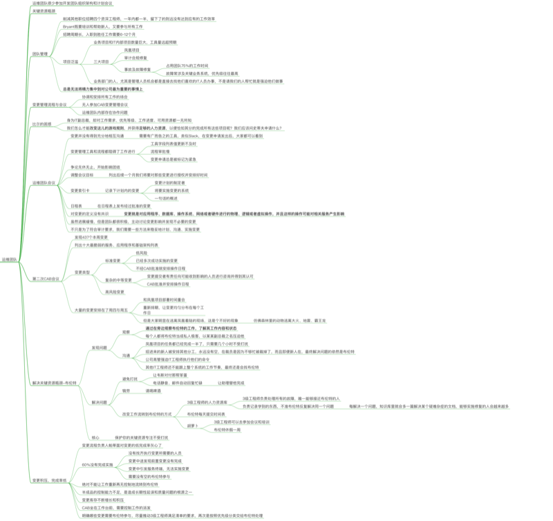
2. 开发团队
重点问题：研发过程依然是没有价值可言的，业务人员缺乏IT****常识是致命的，从这可以看出整个公司几乎不存在协作氛围，团队之间缺乏基本的信任和依赖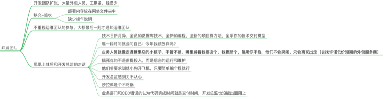
3. 安全团队
安全团队最大的问题就是没有整体思维，只关注安全问题，忽略整体利益安全应该是视为质量的一部分，内建于开发过程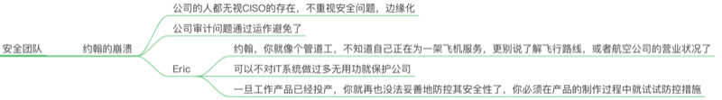
5. 思考和改进
关于运维的四类工作的划分：
- 内部项目（IT基础架构项目）
- 业务项目
- 变更
- 比尔上任后的主要工作
- 预防计划外工作的产生
- 更好地协调变更，以免它们失败
- 确保对事故和服务中断的有序处理，以免妨碍关键资源
- 计划外工作（反工作）
- 计划外工作是恢复性工作，几乎总是让你远离目标
- 知道你的计划外工作从和而来就显得尤为重要
金句：
- 预防措施有个问题，就是你很少能知道自己究竟避开了哪些灾难
第二部分：改邪归正
我将第二部分命名为：改邪归正。在这个阶段里，运维、开发、测试、安全团队携手合作，将凤凰平稳向前推进。这部分更重要的一点是，IT团队对业务目标的理解以及IT系统与业务目标的对应关系有了深刻的认识。什么系统更重要，为什么要上线监控系统的背后逻辑是公司的业务目标。寻找改变的方向：凤凰失败后的对话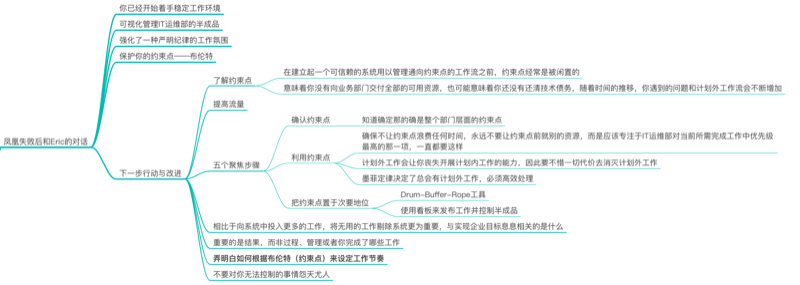
1. 破冰会议
- 信任是非常重要的，
- 运维团队需要限制在制品数量，提高整个系统的流量
- 大胆的举动：冻结除已知重要以外的所有工作
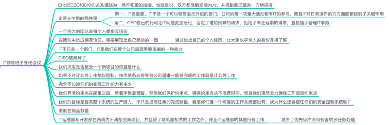
2. 如何提高流量：项目冻结后的对话
- 监控很重要，可以提高预防性
- 可视化资源的等待时间
- 基于约束点，最大化流量
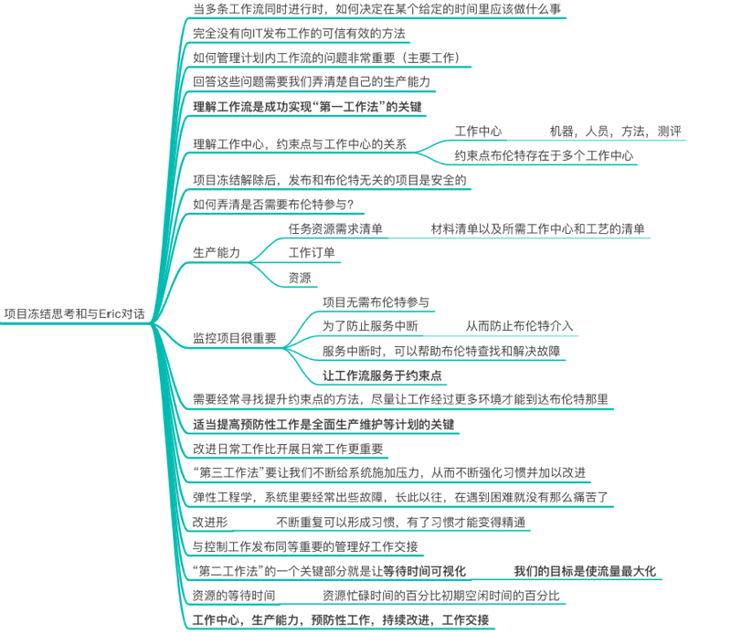
3. 基于约束点的优先级排序：项目解决准备
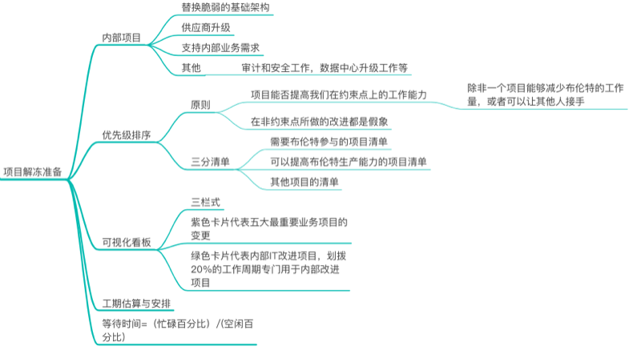
4. 运维的本质：帮助业务实现成功
和COO的对话，让比尔了解了运维的本质，任何的决定都是围绕业务的成功，比尔需要弄清楚哪些业务对应着哪些IT系统，哪些很重要，怎么和业务协作来优化运维管理。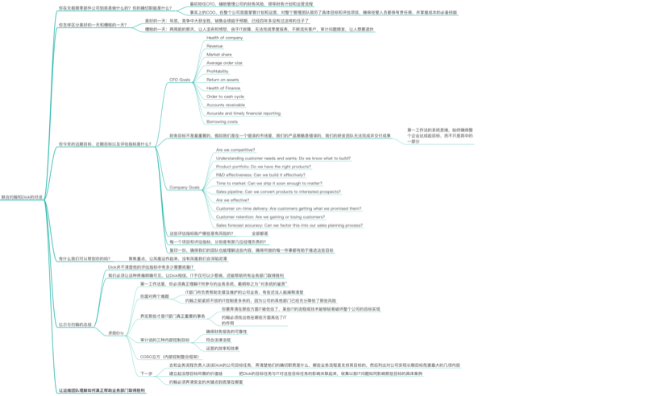
5. 运维与业务的融合
运维团队对公司的业务目标达成一致，关键业务以及对应的IT系统，主要风险，对应的改进措施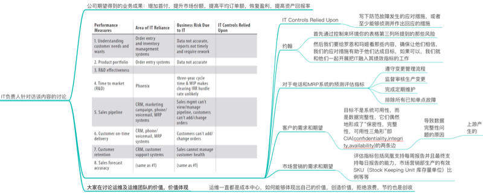
第三部分：涅槃重生
我将第三部分总结为“涅槃重生”，我想这也就是作者将书名叫做凤凰项目的原因，在这个阶段，比尔带领研发团队、运维团队、测试团队和业务团队一起快速交付了独角兽项目。为公司实现了盈利，赢得了竞争。
1. 价值流图
从代码提交，到上线运营的全流程如图所示，针对自己项目的详细分析，完成价值流图梳理和设计，可以帮助我们识别主要问题环境，优化价值流速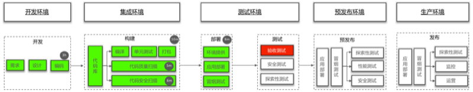
2. 持续改进
让团队形成持续的竞争力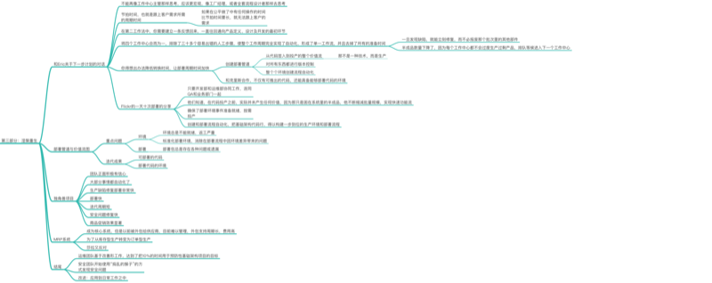
后记
三步工作法
【第一步】帮助我们理解在工作从开发部移向IT运维部时该如何建立快速工作流，因为那就是业务部门与客户之间的衔接。第一工作法是关于从开发到技术运营，再到客户的整个自左向右的工作流。为了使流量最大化，我们需要小的批量规模和工作间隔，绝不让缺陷流向下游工作中心，并且不断为了整体目标（相对于开发功能完成率、测试发现/修复比例或运维有效性等局部目标）进行优化。实践：持续构建、持续集成、持续部署，按需创建环境、限制半成品，构建起能够顺利变更的安全系统和组织。
【第二步】告诉我们如何缩短及放大反馈环路，从而在源头上解决质量问题，避免返工第二工作法是关于价值流各阶段自右向左的快速持续反馈流，方法其效益以确保防治问题再次发生，或者更快地发现和修复问题。这样，我们就能在所需之处获取或嵌入知识，从源头上保证质量。 实践：
- 在部署管道中的构建和测试失败时“停止生产线”
- 日复一日持续的改进日常工作
- 创建快速的自动化测试套装软件，以确保代码总是处于可部署的状态
- 在开发和技术运营之间建立共同的目标和共同的解决问题的机制
- 建立普遍的产品遥测技术，让每个人都能知道，产品和环境是否在按设定的运行，以及是否达到了客户的目标
**【第三步】**告诉我们如何建立一种文化，既能鼓励探索，从失败中吸取教训，又能理解反复的实践是精通工作的先决条件。第三工作法是关于创造公司文化，该文化可带动两中风气的形成：
- 不断尝试，这需要承担风险并从成功和失败中吸取经验教训
- 理解重复和联系是熟练掌握的前提 尝试和承担风险让我们能够不懈地改进工作系统，这经常要求我们去做一些和以往做法大不相同的事。一旦出现问题，不断重复的日常操作赋予我们的技能和经验，令我们可以撤回至安全区域并恢复正常运作
【实践】
- 营造一种勇于创新、敢于冒险（相对于畏惧和盲目服从命令）以及高度信任（相对于低信任度和命令控制）的文化
- 把至少20%的开发和技术运营周期划拨给非功能性需求，并且不断鼓励进行改进
思考
- 如果不是比尔会怎样？比尔是公司的老员工，对公司有责任感，对公司员工有感情，否则在如此内忧外患，谁还愿意苦苦支撑。在凤凰项目部署前的最后时刻，依然不抛弃不放弃的劝说CEO、业务总监推迟发布
- 比尔为什么上任后一定要首先搞定变更管理，因为计划外工作会毁了一切，而能扼住其咽喉的只有变更管理
- 关于团队建设
- T型人才
- 梯形队伍